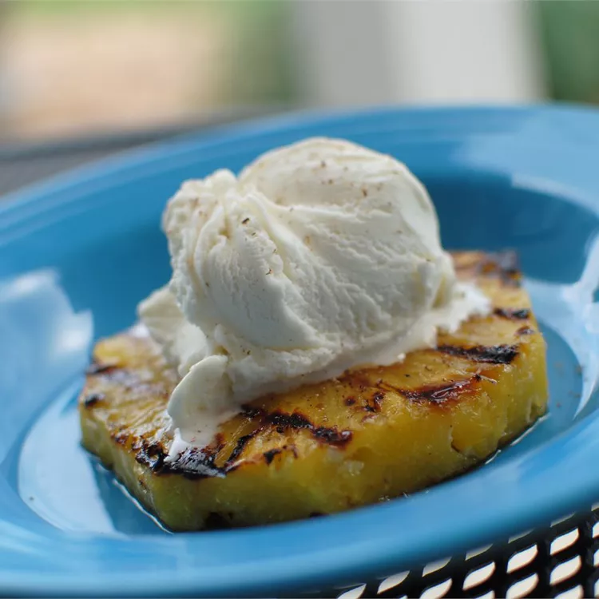

Grilled Pineapple Slices

Description
Grilled cinnamon sweet pineapple rings! You can't eat just one ring!
Ingredients
- 1 fresh pineapple - peeled, cored and cut into rings
- ¼ cup canned coconut milk
- ½ cup cinnamon sugar
Steps
- Preheat a grill for medium heat. When the grill is hot, lightly oil the grate.
- Place the coconut milk and cinnamon sugar into separate dishes. Dip slices of pineapple into coconut milk,
then coat in cinnamon sugar.
- Grill slices for 6 minutes on each side. Remove to plates, and serve.
Note: To make cinnamon sugar, combine 1/2 cup sugar and 1 teaspoon cinnamon in a jar. Screw
on the lid and shake to combine. Use more or less cinnamon to taste.
Back to Homepage